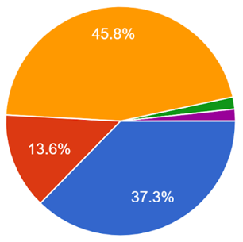
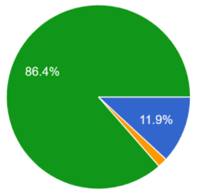

Problemática que buscamos solucionar
En el Centro de Estudios Científicos y Tecnológicos 9 “Juan de Dios Bátiz” se ha observado
que el trabajo que se tiene que desempeñar ahí es intenso y que para que los alumnos logren cumplir
con todas las tareas solicitadas por los profesores de cada materia, estos deben tener una organización
muy bien estructura y cuidada, algo que muy pocos alumnos tienen o bien, esta es muy deficiente, esto
se puede deducir ya que la mayoría trabaja contrarreloj para entregar lo mínimo solicitado, aunque también
hay quienes simplemente no entregan la tarea.
Lamentablemente la misma problemática se presenta en otro aspecto de la vida de los estudiantes, en este
caso en la organizaci$oacuten que debe desarrollarse en los equipos de proyecto aula y/o en las startups que se
crean dentro de la escuela, pues los equipos deben de tener una organización bien estructurada y delicada,
esto para cumplir sus metas en los períodos indicados, los cuales son muy cortos, estrictos y están sujetos
a cambios drásticos.
Investigación de la problemática
Para conocer con más exactitud que tan frecuente es la mala organización en los alumnos del CECYT 9, HWI realizó una encuesta a 60 estudiantes de diferentes semestres y especialidades. Los datos obtenidos fueron que al menos el 35 porciento de los encuestados tienen una organización deficiente, el 35 porciento una organización decente, mientras que solo el 5 porciento tiene una organización bien elaborada. Algo destacable es que solo una persona dice no conocer a nadie desorganizado.
|
Hipótesis
Con un análisis de la información presentada, se concluyóe que la mala organización es un problema que debe ser solucionado con un organizador visual sencillo, llamativo, portable y fácil de usar, esto para que los alumnos puedan encontrar útil la aplicación y no la vean como algo que en vez de ayudarlos los estrese más.
|

|
Solución
La solución que nosotros ofrecemos a esta problemática será un programa de nombre “Team-Task”,
que busca ayudar a mejorar la organización del dón a dón de una forma interactiva y dinámica.
Tomando de base la investigación realizada, el 50.8% de los encuestados respondierona a la pregunta "¿Cómo organizas tus actividades escolares, laborales o del día a día?”
que suelen organizar su tiempo de alguna manera,
ya sea en algún tipo de agenda parecida la pizarra Kanban o algún otro método de organización.
|
|
Un 11.9% de los encuestados afortunadamente contaba con la practica de haber utilizado una pizarra Kanban
y nos respaldan diciendo que es una herramienta muy eficiente y practica.
|

|
¿Por qué elegir Team-Task?
Team-Task busca integrar una interfaz intuitiva y fácil de usar que convierta la organización
y creación de la pizarra kanban en algo no estresante, utilizando algo que día a día nos
acompaña, nuestros dispositivos electrónicos. Además, el uso será completamente gratuito.
Si su organización quiere mejorar... a Team-Task debe considerar.
Más información próximamente.
Contácto:
incorporationhelloworld@gmail.com
|